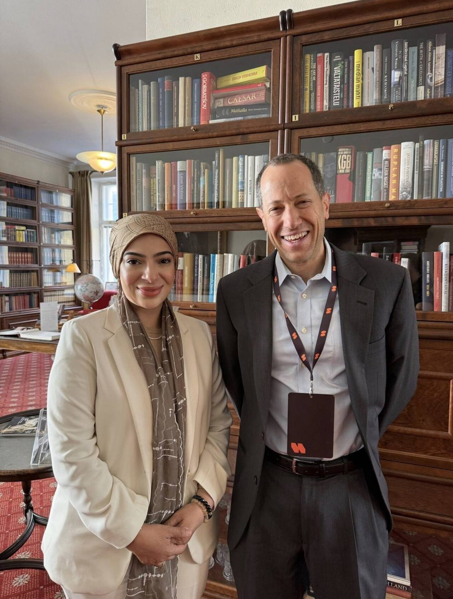

01
Geoeconomics & the New Global Order
How economics, investment, regulation, and diplomacy are reshaping international power.
Draft for review · not yet published
Skip to contentConversations for a changing world
Lubna has appeared on BBC and CNN and has addressed governments, global audiences, and multilateral institutions across the United Nations system, including the World Health Organization and the Human Rights Council. She has convened roundtables at the World Economic Forum and speaks on geoeconomics, global governance, leadership, and institutional change, bringing a practitioner’s perspective to international, policy, and business audiences.

These are selected themes rather than a fixed list; I also address governance, the rule of law, and the reform of institutions.
01
How economics, investment, regulation, and diplomacy are reshaping international power.
02
The Gulf’s evolving role in global economic and geopolitical affairs.
03
A personal keynote on leadership across law, government, banking, and diplomacy.
04
What business and diplomacy can learn from each other about influence, governance, and decision-making.
05
What institutions must do to create genuine pathways for women’s leadership and economic participation.
06
How legal and regulatory architecture can enable economic and institutional transformation.

Helsinki Geoeconomics Week 2026
“Investment is no longer just about returns, it’s about resilience, alignment and strategic positioning.”
Co-chairing two investment sessions with Stephen Heifetz, where leaders from business, government, law, political science and academia examined how capital is being reconfigured by geoeconomic realities.
Keynotes · Executive dialogues · Board retreats · Roundtables · Moderation · University lectures
A moderated conversation, board retreat, or closed-door roundtable is often the best use of my experience: an intelligent room grappling with a difficult question.
What audiences say